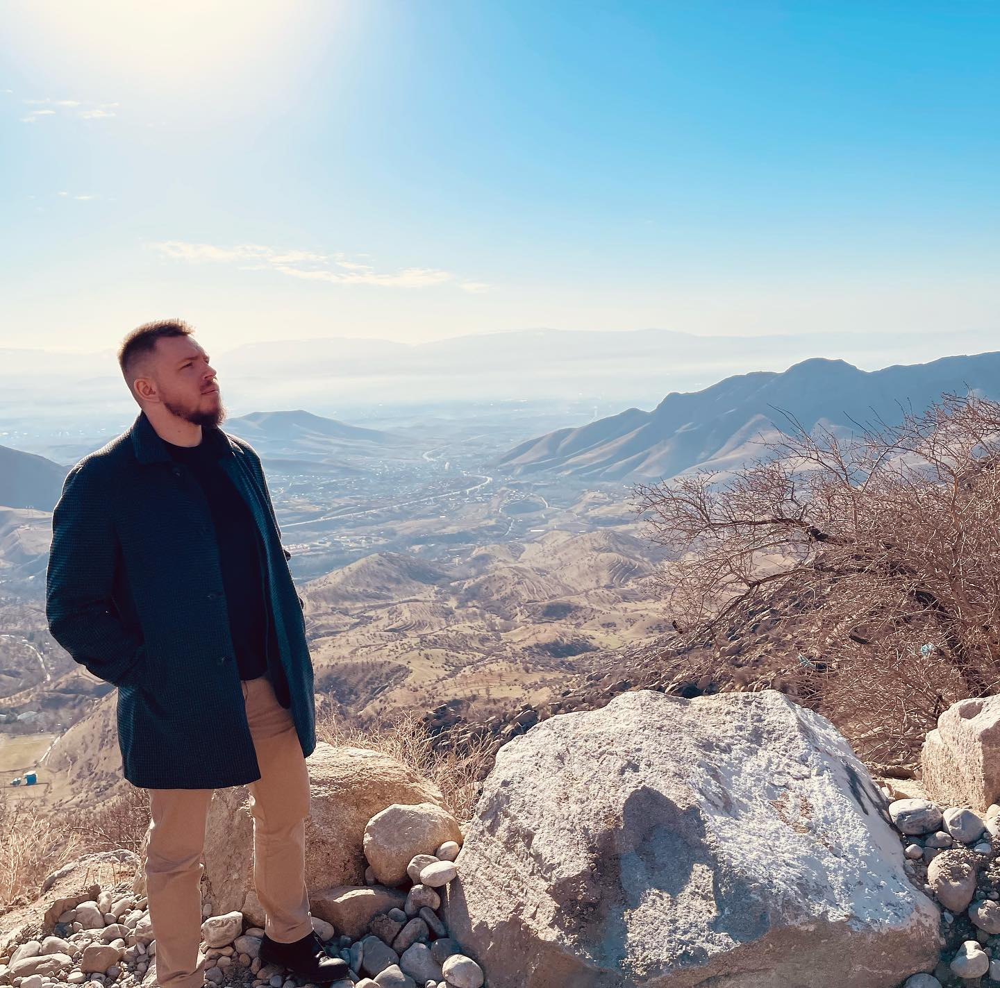

|  |
Специалист по клиническому обучению МРТГерманов Михаил ВикторовичМуж., 27 лет (13 сентября 1994г.), Москва, Калуга. |
| Компания | Город/Должность/Год работы |
|---|---|
| Медбрат ЦКБ (отделение реанимации) | Вышний Волочок (2014г-2016г) |
| «МРТ-Эксперт» | Тверь – оператор МРТ. (2016г-2017г) | «ЦМРТ» | Москва -оператор (2017г-2018г) |
| «МРТ «Томография+» | Тверь - (оператор МРТ 2017г-2018г) | «МРТ-24» | Москва – старший оператор МРТ, КТ. (2017г-2020г) |
| «НПЦ медицинской радиологии Департамента здравоохранения города Москвы» | Москва Отдел развития (2019г-2020г) | GE Healthcare | Москва - Специалист по клиническому обучению МРТ (2020 - настоящее время) |